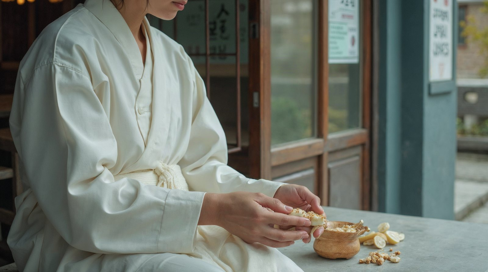
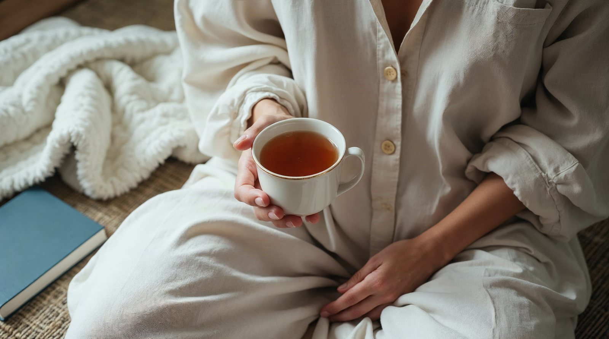
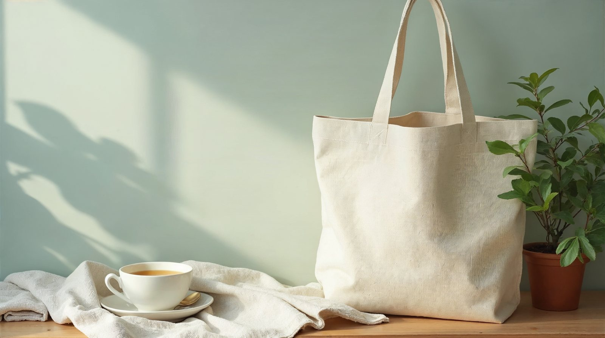
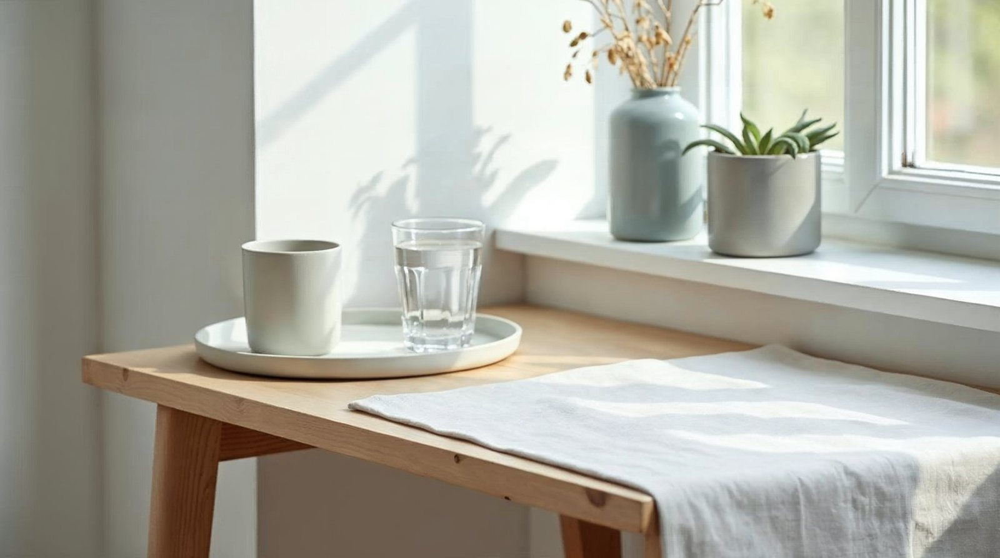
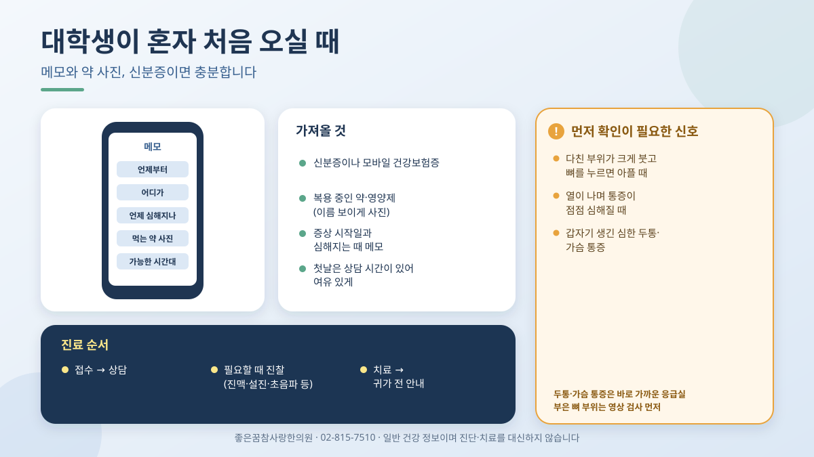

이종호 한의사 감수좋은꿈참사랑한의원 대표원장 (한의사 면허번호 19769)발행 2026-11-24 · 수정 2026-11-27
이 글의 차례
- 왜 이런 불편이 생길 수 있나요
- 증상은 이렇게 세 줄로 정리해 오세요
- 먼저 이렇게 여쭙니다
- 약과 영양제, 이런 것도 알려 주세요
- 여학생이라면 이것도 함께
- 일상에서 먼저 해 볼 수 있는 것
- 처음 오시는 날은 이렇게 흘러가요
- 오시는 시간은 이렇게 정해 보세요
- 이런 것도 물어봐도 될까요?
- 참고 버티는 것과 쉬어 주는 것은 다른 얘기예요
- 시험 기간, 몸은 이렇게 버텨요
- 노트북 자세, 이렇게 바꿔 보세요
- 아르바이트로 서서 일한다면
- 처음 자취를 시작했다면
- 잠이 자꾸 흔들린다면
- 부모님께 꼭 알려야 할까요?
- 하나만 부탁드릴게요
- 한의원에서 함께 살필 수 있는 경우
- 이렇게 기록해 오시면 상담이 쉬워집니다
- 이런 증상은 먼저 확인이 필요합니다
신분증이나 모바일 건강보험증, 복용 중인 약과 영양제 이름, 증상이 시작된 때와 심해지는 때를 적은 메모만 챙기면 혼자 오는 첫 진료도 어렵지 않습니다.
흑석동이나 상도동에서 학교를 다니는 대학생분들은 허리, 손목, 소화, 잠 문제로 처음 혼자 한의원에 올 때 무엇을 가져가야 할지 몰라 망설이시는 경우가 많습니다.
혼자 병원에 가는 게 처음이라 문 앞에서 한참 망설였다는 학생들이 꽤 있어요. 집에서는 늘 부모님이 챙겨 주셨으니 무엇을 말해야 할지, 뭘 물어볼지 막막한 게 당연하죠. 그 마음 충분히 이해해요.
그러니까 사실은 잘 설명하려고 애쓰지 않으셔도 돼요. 어디가, 언제부터, 무엇을 할 때 불편한지만 알고 오시면 나머지는 제가 차근차근 여쭤볼게요. 진료실은 시험 보는 곳이 아니거든요. 말이 엉켜도, 순서가 뒤죽박죽이어도 괜찮아요. 같이 풀어 가면 되는 거예요.
왜 이런 불편이 생길 수 있나요
- 수업과 과제로 오래 앉아 노트북을 보면 목과 허리, 손목에 부담이 쌓이기 쉽습니다.
- 시험 기간에는 잠이 줄고 끼니가 불규칙해져 소화와 잠이 함께 흔들리는 학생이 많습니다.
- 처음 자취를 시작하면 생활 리듬이 흐트러져 피로가 쌓이기도 합니다.
- 운동하다 다친 부위를 쉬지 못하고 계속 쓰면 불편이 오래가는 경우가 있습니다.
증상은 이렇게 세 줄로 정리해 오세요
진료실에 들어오면 누구나 조금 긴장해서, 집에서 하려던 말이 잘 생각나지 않아요. 그래서 휴대폰 메모에 딱 세 줄만 적어 오시길 권해요.
- 언제부터: "2주 전부터", "시험 기간 시작하고부터"
- 어디가 어떻게: "오른쪽 손목 바깥쪽이 시큰", "명치가 더부룩"
- 무엇을 할 때: "마우스 오래 쓸 때", "밤에 야식 먹은 다음 날 아침"
예를 들어 "3주 전부터 오른쪽 허리 아래가 뻐근, 강의실 의자에 두 시간 넘게 앉으면 더 심함"처럼요. 이 정도면 충분해요. 나머지는 제가 이어서 여쭤보면 되거든요.
아픈 정도를 0에서 10 사이 숫자로 적어 두셔도 좋아요. 오늘은 몇 점, 가장 심했을 땐 몇 점이었는지요. 다음에 오셨을 때 달라진 점을 비교하기가 훨씬 쉬워져요.

먼저 이렇게 여쭙니다
- 가장 불편한 곳은 어디이고 언제부터인가요?
- 어떤 동작이나 상황에서 더 심해지나요?
- 복용 중인 약이나 영양제가 있나요?
- 수업이나 아르바이트 때문에 진료를 받을 수 있는 시간대는 언제인가요?
약과 영양제, 이런 것도 알려 주세요
학생들은 "약은 안 먹어요" 하시다가 자세히 여쭤보면 이것저것 나오는 경우가 많아요. 두통 때문에 가끔 먹는 진통제, 피부과에서 받은 약, 다이어트 보조제, 잠 안 올 때 먹는 것들이요.
에너지 음료나 진한 커피를 하루에 얼마나 드시는지도 알려 주세요. 약은 아니지만 잠과 소화, 심장 뛰는 느낌에 영향을 주는 경우가 많거든요. 시험 기간에 하루 서너 캔씩 마시는 학생들도 꽤 있어요.
이런 걸 알아야 한약을 정할 때 겹치지 않게 볼 수 있어요. 처방받은 약은 처방한 의사와 상의 없이 줄이거나 끊지 않습니다. 이름이 기억나지 않으면 약 봉투나 통을 사진으로 찍어 오시면 돼요.
예전에 한약을 먹어 본 적이 있는지, 먹고 나서 불편했던 적이 있는지도 알려 주세요. 어릴 때 부모님이 지어 주신 약이라도 괜찮아요. 몸이 어떻게 반응했는지가 지금 방법을 정하는 데 참고가 되거든요.
음식이나 약에 알레르기가 있다면 그것도 메모 맨 위에 적어 두세요.
여학생이라면 이것도 함께
생리 주기가 규칙적인지, 마지막 생리가 언제였는지 메모해 오시면 도움이 돼요. 시험 기간이나 자취를 시작한 뒤로 주기가 흔들렸다는 학생들이 많거든요. 잠과 소화, 피부 상태와도 같이 연결해서 볼 수 있어요.
임신 중이거나 가능성이 있다면 꼭 먼저 말씀해 주세요. 치료 방법을 정할 때 중요한 정보이고, 이 경우엔 산부인과와도 상의하시는 게 필요해요. 말하기 어려운 이야기라도 진료실에서는 편하게 하셔도 괜찮아요.

일상에서 먼저 해 볼 수 있는 것
- 신분증이나 모바일 건강보험증 챙기기
- 증상이 시작된 날과 심해지는 때를 휴대폰 메모에 적어 두기
- 복용 중인 약과 영양제는 이름이 보이게 사진 찍어 오기
- 처음 오시는 날은 상담 시간이 있어 여유 있게 시간 잡기
처음 오시는 날은 이렇게 흘러가요
접수를 하시고 나면 진료실에서 먼저 맥을 짚어요. 모든 분께 그렇게 하거든요. 맥을 짚으면서 메모해 오신 이야기를 같이 보고, 언제 어떻게 불편한지 차근차근 여쭤봐요.
그다음 필요하면 혀를 보거나, 아픈 부위가 있다면 어느 동작에서 아픈지 직접 움직여 보면서 확인해요. 필요하다고 판단되면 초음파로 더 살펴보기도 하고요.
그렇게 살핀 뒤에 지금 상태에 맞는 방법을 같이 정해요. 침이 맞을 수도 있고, 약침이나 추나, 온열 물리치료가 필요할 수도 있고, 한약 상담이 먼저일 수도 있어요. 어떤 걸 왜 하는지 설명드린 다음에 정하니까, 궁금한 건 그때 편하게 물어보세요.
귀가 전에는 집에서 해 볼 것과 다음에 확인할 것을 알려 드려요. 다시 오실 때는 지난번 이야기부터 이어서 여쭤보니까 처음부터 다시 설명하지 않으셔도 돼요.
옷은 아픈 곳을 보여 주기 쉬운 걸로 입고 오시면 편해요. 손목이 불편하면 소매가 넉넉한 옷, 무릎이 불편하면 걷어 올리기 쉬운 바지요. 몸에 꽉 끼는 청바지나 옷은 움직임을 확인할 때 불편할 수 있거든요.
치료를 시작하면 보통 한 달 정도 지내 보면서 어떻게 달라지는지 같이 보고 다음을 정해요. 사람마다 반응이 달라서 처음부터 길게 정해 두지 않는 거예요. 통증이 줄었다고 바로 끝내기보다, 다시 불편해지지 않게 어떻게 지낼지도 같이 이야기 나눠요.
오시는 시간은 이렇게 정해 보세요
평일은 저녁 8시까지, 토·일·공휴일은 오후 3시까지 진료해요. 수업 시간표와 아르바이트 일정을 한번 펼쳐 놓고, 공강이나 수업이 일찍 끝나는 날을 골라 보세요.
처음 오시는 날은 이야기 나눌 시간이 필요해서, 다음 수업까지 빠듯하게 잡기보다 여유 있게 오시는 게 좋아요. 시계를 보며 마음이 급해지면 정작 하고 싶은 말을 빠뜨리기 쉽거든요.
다시 오셔야 한다면 매주 비슷한 요일과 시간으로 정해 두시면 잊지 않고 이어 가기 편해요. 시험 기간처럼 바쁜 주에는 미리 말씀해 주시면 같이 일정을 조정해 봐요.
이런 것도 물어봐도 될까요?
"이런 걸 물어봐도 되나" 싶어 말을 삼키는 학생들이 많아요. 그런데 사소해 보이는 질문이 실제로는 중요한 단서인 경우가 꽤 있어요. 커피를 몇 잔까지 마셔도 되는지, 운동은 언제부터 다시 해도 되는지 같은 것들이요.
궁금한 건 그냥 아무거나 물어보세요. 메모 마지막 줄에 질문을 하나 적어 오시면 잊지 않고 물어볼 수 있어요. 진료실을 나서고 나서 생각난 질문은 다음에 오실 때 물어보셔도 되고요.
참고 버티는 것과 쉬어 주는 것은 다른 얘기예요
두 개가 다른 얘기거든요. 운동하다 발목을 삐끗하거나 손목을 접질렸는데, 젊으니까 괜찮겠지 하고 계속 쓰는 학생들이 많아요. 그런데 다친 곳을 쉬지 못하고 계속 쓰면 불편이 오래가는 경우가 흔해요.
운동하지 말라는 게 아니에요. 다친 직후에는 아픈 동작을 잠깐 줄이고, 어느 정도 가라앉으면 천천히 다시 늘려 가자는 거예요. 초반에 잘 돌봐 두는 게 나중에 덜 고생하는 길이거든요.
다친 날짜와 상황, 그때 부었는지 멍이 들었는지를 기억해 두셨다가 말씀해 주세요. 사진이 있다면 더 좋아요. 다른 병원에서 엑스레이를 찍었다면 그 결과도 함께 알려 주세요.
시험 기간, 몸은 이렇게 버텨요
시험 기간에는 잠을 줄이고, 끼니를 편의점으로 때우고, 커피로 버티는 경우가 많죠. 그 몇 주 동안 소화가 안 되고, 머리가 무겁고, 어깨가 돌처럼 굳는 건 원래 그럴 수 있어요. 몸이 비상 모드로 버티고 있는 거예요.
그렇다고 시험 기간에 생활을 다 바꾸라고 하진 않을게요. 그건 지키기 어렵잖아요. 대신 가능하면 밤을 새우더라도 아침에 일어나는 시간은 크게 흔들리지 않게 두시는 게 좋아요. 몸의 시계가 덜 흔들리면 시험이 끝난 뒤 회복도 한결 수월한 경우가 많거든요.
시험이 끝난 날 친구들과 밤새 놀고 다음 날 하루 종일 자는 것도 몸에는 또 한 번의 큰 흔들림이에요. 시험 끝난 날만큼은 일찍 들어가 푹 자 보세요. 그게 다음 학기를 버티는 힘이 되거든요.
공부하다 한 시간에 한 번은 일어나서 어깨를 돌리고 물 한 잔 마셔 주세요. 약하게라도 자주 움직이는 게 몇 시간 내리 앉아 있다가 한 번에 스트레칭하는 것보다 몸에 더 잘 맞아요.
노트북 자세, 이렇게 바꿔 보세요
노트북을 책상에 그대로 놓고 오래 보면 고개가 저절로 앞으로 숙여져요. 머리는 생각보다 무거워서, 고개가 앞으로 나갈수록 목과 어깨가 그 무게를 붙잡고 버티느라 굳기 쉬워요.
두꺼운 책 몇 권을 노트북 아래에 받쳐 화면을 눈높이 가까이 올려 보세요. 따로 키보드와 마우스를 쓰면 손목도 덜 꺾여요. 비싼 장비가 아니어도 집에 있는 걸로 충분히 해 볼 수 있어요.
침대나 바닥에 엎드려 노트북을 보는 습관이 있다면 그것부터 줄여 보세요. 편해 보여도 목과 허리, 손목이 한꺼번에 꺾이는 자세라서 다음 날 뻐근함이 오래가는 경우가 많거든요.
아르바이트로 서서 일한다면
카페나 편의점, 매장에서 오래 서서 일하는 학생들도 많죠. 한자리에 오래 서 있으면 다리가 붓고 허리 아래가 뻐근해지기 쉬워요. 무거운 박스를 들거나 같은 동작을 반복하면 손목과 어깨에도 부담이 쌓이고요.
틈날 때 발뒤꿈치를 들었다 내렸다 하거나, 한쪽 발을 낮은 곳에 번갈아 올려 두면 다리와 허리가 조금 덜 지쳐요. 박스를 들 때는 허리만 숙이지 말고 무릎을 굽혀 몸 가까이 붙여 드세요.
진료 때 어떤 일을 몇 시간씩 하는지 알려 주시면, 그 동작에 맞춰서 같이 살펴볼 수 있어요.
처음 자취를 시작했다면
자취를 시작하면 밥 먹는 시간, 자는 시간을 정해 주는 사람이 없어지잖아요. 자유로운 만큼 생활이 쉽게 흐트러져요. 그러다 보니 몇 달 지나 피곤하고 소화가 안 된다며 오시는 학생들이 많아요.
거창한 식단은 필요 없어요. 하루 한 끼라도 정해진 시간에 따뜻한 밥을 드시는 것부터 해 보세요. 늦은 밤 배달 음식은 배가 정말 고플 때만 드시고요. 배가 안 고픈데 습관처럼 먹는 한 끼가 몸에는 더 부담이 되는 경우가 많거든요.
방이 좁다 보니 침대가 책상이자 식탁이자 소파가 되는 경우도 많죠. 하루 종일 같은 자리에서 먹고 공부하고 쉬면 몸이 언제 쉬어야 할지 헷갈려 해요. 공부는 책상에서, 잠은 침대에서만 하는 것부터 나눠 보세요.
혼자 지내다 보면 아파도 말할 사람이 없어서 참게 되는 경우도 있어요. 그럴 때 혼자 버티지 마시고 편하게 들러 주세요. 그런 이야기 들어 드리는 것도 제 일이에요.
잠이 자꾸 흔들린다면
새벽까지 과제하고, 오후 수업 직전에 일어나는 생활이 이어지면 몸의 시계가 뒤로 밀려요. 그러면 밤에 누워도 잠이 안 오고, 아침엔 머리가 무겁고, 낮엔 집중이 안 되는 고리가 생기기 쉬워요.
잠들기 직전까지 휴대폰을 보는 습관도 한번 돌아보세요. 화면 속 이야기가 머리를 계속 깨워 두거든요. 누운 뒤 삼십 분이 지나도 잠이 안 오면 잠깐 일어나 불을 어둡게 하고 조용히 있다가 다시 누워 보세요.
잠이 몇 주째 계속 흔들리거나, 걱정과 불안 때문에 잠을 못 이루신다면 그 이야기도 편하게 꺼내 주세요. 필요하면 학교 상담센터도 함께 안내해 드릴게요.
부모님께 꼭 알려야 할까요?
성인이니까 진료는 혼자 받으셔도 충분해요. 진료실에서 나눈 이야기는 본인이 정하시는 대로 하시면 되고요. 다만 한약처럼 꾸준히 드셔야 하는 것은 일정이나 여러 사정으로 가족과 상의하고 싶으실 수도 있잖아요.
그럴 땐 상담만 먼저 받고 가셔서 가족과 이야기해 본 뒤에 정하셔도 괜찮아요. 한 번에 다 결정하지 않으셔도 되는 거예요.
하나만 부탁드릴게요
준비할 게 많아 보여도 하나만 해 주시면 돼요. 휴대폰 메모에 언제부터, 어디가, 무엇을 할 때 불편한지 세 줄만 적어 와 주세요. 딴 건 편하게 오셔도 괜찮아요. 나머지는 제가 맡을게요.

한의원에서 함께 살필 수 있는 경우
- 공부 자세 때문에 목·허리가 불편한 경우 앉는 자세와 움직임을 함께 살핍니다.
- 시험 기간마다 소화나 잠이 흔들리는 경우 생활 리듬을 함께 살핍니다.
- 운동하다 다친 부위가 오래 불편한 경우 아픈 동작을 넓게 살피고, 필요하면 다른 의료기관 검사를 안내합니다.
좋은꿈참사랑한의원에서는 접수하신 뒤 모든 분께 맥부터 짚으며 불편한 점을 여쭙습니다. 필요하면 혀(설진)나 초음파로 더 살핀 뒤 치료와 귀가 전 안내로 이어집니다. 다시 오실 때는 지난번 이야기부터 이어서 여쭙습니다.
한약을 드시게 되면 드시는 동안 술은 드시지 않는 것이 좋아요. 드시다가 속이 불편하거나 몸에 맞지 않는 느낌이 들면 복용을 멈추고 한의원으로 연락해 주세요.

이렇게 기록해 오시면 상담이 쉬워집니다
- 불편한 곳과 시작된 날, 심해지는 동작이나 상황
- 복용 중인 약과 영양제(이름이 보이게 사진)
- 진료를 받을 수 있는 요일과 시간대
- 다친 일이 있었다면 날짜와 상황
이런 증상은 먼저 확인이 필요합니다
- 다친 부위가 크게 붓거나 뼈를 눌렀을 때 아픈 경우
- 갑자기 생긴 심한 두통이나 가슴 통증이 있는 경우
이런 신호가 있으면 한의원보다 가까운 병원이나 응급실을 먼저 찾으세요.

여쭙는 것
- 가장 불편한 곳은 어디이고 언제부터인가요?
- 어떤 동작이나 상황에서 더 심해지나요?
- 복용 중인 약이나 영양제가 있나요?
생활에서 해 볼 것
- 신분증이나 모바일 건강보험증 챙기기
- 증상이 시작된 날과 심해지는 때를 휴대폰 메모에 적어 두기
- 복용 중인 약과 영양제는 이름이 보이게 사진 찍어 오기
한의원에서 함께 살필 것
- 공부 자세 때문에 목·허리가 불편한 경우 앉는 자세와 움직임을 함께 살핍니다.
- 시험 기간마다 소화나 잠이 흔들리는 경우 생활 리듬을 함께 살핍니다.
- 운동하다 다친 부위가 오래 불편한 경우 아픈 동작을 넓게 살피고, 필요하면 다른 의…
먼저 확인이 필요한 신호
- 다친 부위가 크게 붓거나 뼈를 눌렀을 때 아픈 경우
- 갑자기 생긴 심한 두통이나 가슴 통증이 있는 경우
한눈에 보는 표
| 구분 | 핵심 |
|---|---|
| 여쭙는 것 | 가장 불편한 곳은 어디이고 언제부터인가요? 어떤 동작이나 상황에서 더 심해지나요? |
| 생활에서 해 볼 것 | 신분증이나 모바일 건강보험증 챙기기 증상이 시작된 날과 심해지는 때를 휴대폰 메모에 적어 두기 |
| 한의원에서 함께 살필 것 | 공부 자세 때문에 목·허리가 불편한 경우 앉는 자세와 움직임을 함께 살핍니다. 시험 기간마다 소화나 잠이 흔들리는 경우 생활 리듬을 함께 살핍니다. |
| 먼저 확인이 필요한 신호 | 다친 부위가 크게 붓거나 뼈를 눌렀을 때 아픈 경우 갑자기 생긴 심한 두통이나 가슴 통증이 있는 경우 |
자주 묻는 질문
예약을 해야 하나요?
네이버 예약이나 전화(02-815-7510)로 미리 시간을 확인하고 오시면 일정을 맞추기 편합니다.
평일 저녁에도 진료하나요?
평일은 오후 8시까지 진료합니다(점심시간 13:00~14:00). 수업이 끝난 뒤 늦게 오실 때는 방문 전 전화(02-815-7510)로 확인해 주세요.
혼자 와도 상담 시간이 충분한가요?
처음 오시는 날은 상담 시간을 두고 불편한 점을 충분히 여쭙습니다. 궁금한 점을 메모해 오시면 빠뜨리지 않고 이야기 나눌 수 있습니다.
진료 시간은 어떻게 되나요?
좋은꿈참사랑한의원은 평일 09:30~20:00(점심 13:00~14:00), 토·일·공휴일 09:30~15:00에 진료합니다.
보험 적용은 어떻게 되나요?
건강보험(또는 자동차보험) 적용 여부는 방문 전 전화로 확인해 주세요.
좋은꿈참사랑한의원은 재진 때 지난번 이야기부터 이어서 여쭙니다. 진료시간과 예약은 오시는 길에서 확인하세요.
어디서 상담받을 수 있나요?
좋은꿈참사랑한의원은 서울 동작구 만양로2길 2 신성빌딩 3층·5층(서울 동작구 상도동, 7호선 상도역 3번 출구 근처)에 있습니다. 한의사 3명(이종호 대표원장, 조영기 수석진료원장, 정원영 진료원장)이 진료합니다. 진료시간은 평일 09:30~20:00(점심 13:00~14:00), 토·일·공휴일 09:30~15:00이며, 방문 전 전화로 확인을 권합니다. 예약은 네이버 예약, 카카오톡 상담, 전화 02-815-7510로 받습니다.
이 글은 일반적인 건강 정보이며 개인의 진단이나 치료를 대신하지 않습니다. 증상이 있거나 복용 중인 약이 있다면 진료를 통해 확인하세요. 치료 효과는 개인마다 다를 수 있습니다.
작성 기준: 일반적으로 알려져 있는 건강 정보를 참고해 정리했습니다(대표원장 감수). 증상 기록은 1~2주 동안 하루 1회, 비슷한 시간에 적어 오시면 지난 상태와 비교하기 쉽습니다.